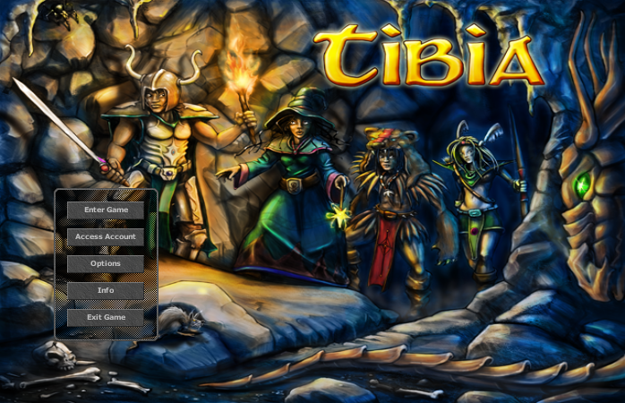

{% extends 'article_base.html' %}
{% block title %}Game list | Erik Rahem{% endblock %}
{% block content %}

Game list
A list of games.
MMORPGs and RPGs
Getting attached to one's character(s)...
Tibia
Why you should play Tibia:
I like the grinding progression...
World of Warcraft
One's characters grow on one.
Skyrim
An interactive story. A super great game.
Pokémon
Stardew Valley
Mount & Blade: With Fire and Sword
Needs adjustments.
Mount & Blade: Warband - Napoleonic Wars
Great multiplayer combat.
RTS
Dawn of War - Dark Crusade
Dawn of War II: Retribution - Last Stand
Is a great game. Defending yourself and your teammates against hordes of creatures.
Why you should play Halo Infinite
{% endblock %}